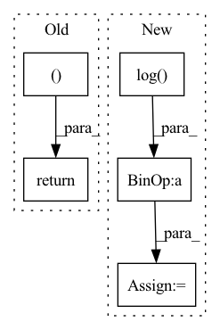

Pattern ID :1954
Before Change
)
)
return tight_loss, logs
def get_distortion(self, Y_hat, targets):
raise NotImplementedError()
After Change
// tightens bound using IWAE: log 1/k sum exp(loss). shape: [batch_size]
if n_z > 1:
rate = torch.logsumexp(rate, 0) - math.log(n_z)
distortion = torch.logsumexp(distortion, 0) - math.log( n_z)
else:
distortion = distortion.squeeze(0)
rate = rate.squeeze(0)
In pattern: SUPERPATTERN
Frequency: 4
Non-data size: 5
Instances Fragment ID: 7309951
Project Name: yanndubs/lossyless
Commit Name: 0a24755494712f360cfbc0e8b8ac9f6907157997
Time: 2020-12-04
Author: yanndubois96@gmail.com
File Name: lossyless/losses.py
M Class Name: Loss
N Class Name: Loss
M Method Name: forward(4)
N Method Name: forward(4)
M Parent Class: nn.Module
N Parent Class: nn.Module
M File Name: lossyless/losses.py
N File Name: lossyless/losses.py
M Start Line: 35
M End Line: 53
N Start Line: 30
N End Line: 59
Before Change
for subloss_idx, subloss in enumerate([global_ball_loss, local_ball_loss, event_loss, seg_loss]):
total_loss += subloss / (self.vars[subloss_idx] ** 2) + torch.log(self.vars[subloss_idx])
return pred_ball_position_global, pred_ball_position_local, pred_events, pred_seg, total_loss, self.vars.data.tolist()
After Change
total_loss = global_ball_loss / (self.vars[0] ** 2) + torch.log(self.vars[0])
total_loss += local_ball_loss / (self.vars[1] ** 2) + torch.log(self.vars[1])
total_loss += event_loss / (self.vars[2] ** 2) + torch.log( self.vars[2])
total_loss += seg_loss / (self.vars[3] ** 2) + torch.log(self.vars[3])
return pred_ball_position_global, pred_ball_position_local, pred_events, pred_seg, total_loss, self.vars
Fragment ID: 7309948
Project Name: maudzung/ttnet-real-time-analysis-system-for-table-tennis-pytorch
Commit Name: 4da85a14862a2246579e66b52da9e6771b63a9f5
Time: 2020-05-19
Author: nguyenmaudung93.kstn@gmail.com
File Name: src/losses/losses.py
M Class Name: Multi_Task_Learning_Model
N Class Name: Multi_Task_Learning_Model
M Method Name: forward(6)
N Method Name: forward(6)
M Parent Class: nn.Module
N Parent Class: nn.Module
M File Name: src/losses/losses.py
N File Name: src/losses/losses.py
M Start Line: 124
M End Line: 132
N Start Line: 112
N End Line: 122
Before Change
encoding_indices = soft_one_hot.argmax(dim=1)
return z_q, loss, (None, None, encoding_indices )
After Change
encoding_indices = soft_one_hot.argmax(dim=1)
encodings = F.one_hot(encoding_indices, self.num_tokens).type(z.dtype)
avg_probs = torch.mean(encodings, dim=0)
perplexity = torch.exp(-torch.sum(avg_probs * torch.log( avg_probs + 1e-10) ))
return z_q, loss, (perplexity, encodings, encoding_indices)
Fragment ID: 7309947
Project Name: tgisaturday/dalle-lightning
Commit Name: 39e8b24fa405a4320d7c683e7054ae18ef4563f4
Time: 2021-07-28
Author: jamesk1228@gmail.com
File Name: pl_dalle/modules/vqvae/quantize.py
M Class Name: GumbelQuantizer
N Class Name: GumbelQuantizer
M Method Name: forward(2)
N Method Name: forward(2)
M Parent Class: nn.Module
N Parent Class: nn.Module
M File Name: pl_dalle/modules/vqvae/quantize.py
N File Name: pl_dalle/modules/vqvae/quantize.py
M Start Line: 127
M End Line: 135
N Start Line: 127
N End Line: 138
Before Change
attn = attn * mapping_mask
output = torch.bmm(attn, v)
return output, attn
After Change
if key_mask is not None:
attn = attn.masked_fill(key_mask == 0., -np.inf)
if attn_prior is not None:
attn = self.log_softmax(attn) + torch.log( attn_prior.transpose(1, 2) + 1e-8)
attn_logprob = attn.unsqueeze(1).clone()
attn = self.softmax(attn)
Fragment ID: 7309957
Project Name: keonlee9420/portaspeech
Commit Name: 814cdda1ebf7dc626708db2bcf20fdb9207f4345
Time: 2022-02-13
Author: keonlee9420@gmail.com
File Name: model/blocks.py
M Class Name: ScaledDotProductAttention
N Class Name: ScaledDotProductAttention
M Method Name: forward(8)
N Method Name: forward(7)
M Parent Class: nn.Module
N Parent Class: nn.Module
M File Name: model/blocks.py
N File Name: model/blocks.py
M Start Line: 615
M End Line: 623
N Start Line: 612
N End Line: 632